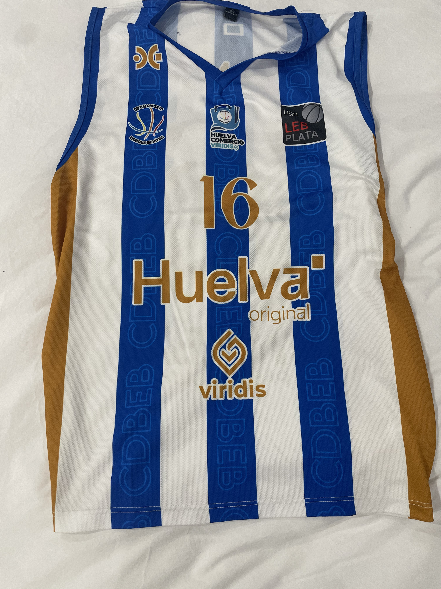
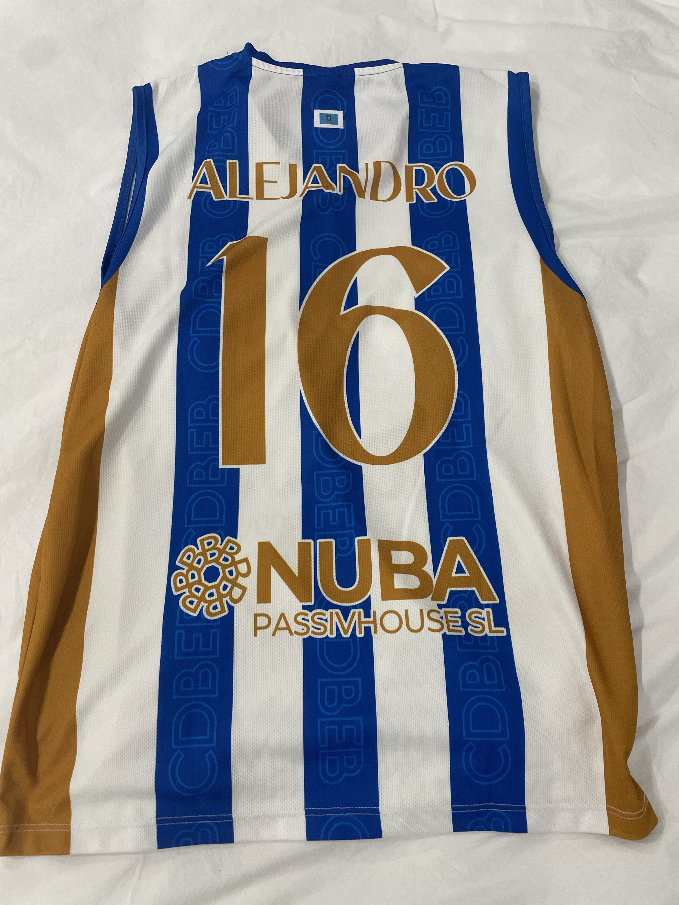
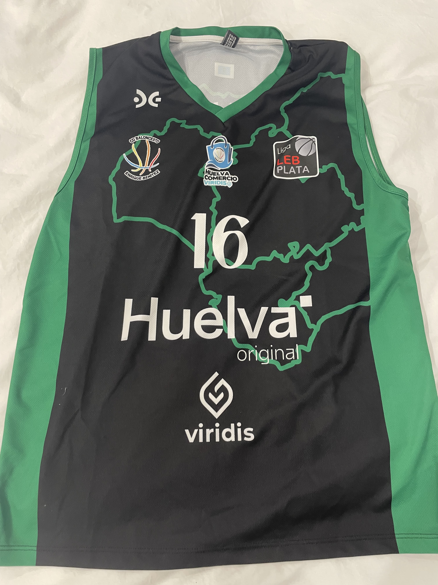
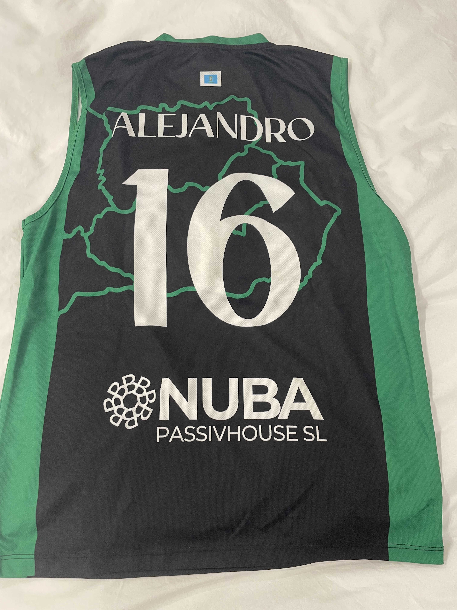

| CAMISETAS DE BALONCESTO |
  |
| La
equipación de baloncesto es fundamental para la protección y el
rendimiento de los jugadores. Incluye una camiseta sin mangas y
pantalones cortos, generalmente hechos de materiales ligeros y
transpirables. Los jugadores también usan zapatillas deportivas
diseñadas para ofrecer soporte en los movimientos rápidos y saltos.
Además, algunos optan por protector de muñeca, rodilleras o coderas
para prevenir lesiones. La camiseta lleva el número y nombre del jugador, mientras que los pantalones suelen ser ajustados para facilitar el movimiento. Esta equipación permite a los jugadores moverse con libertad y comodidad durante los partidos. En esta web enseño las dos camisetas que usaba cuando jugaba en el cadete del Ciudad Comercio de Huelva. |
  |